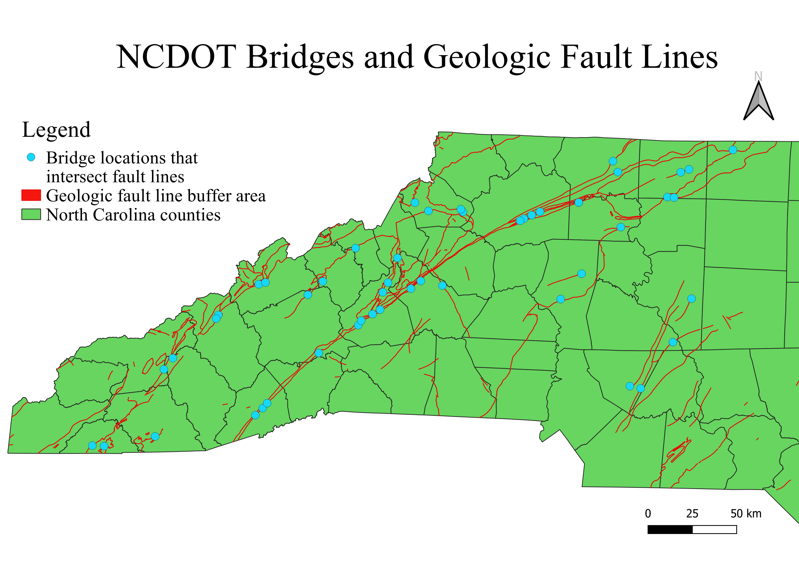

For my map, I was interested in looking at fault lines and how human structures interact with them. We'd talked about areas with historic faults lines and potenial hazards that come from building near them in one of my geology classes. This inspired me to look into fault lines in western North Carolina and what structures are built on these fault lines. To do this I used a shapefile containing the geologic fault lines for North Carolina and placed it over a NC counties layer. Then I found data for bridges managed by the NC Department of Transportation and added the points to my map. Then I created a buffer of 30 meters on the fault lines. I chose a buffer of 30 meters because it is the reccommended minimum distance to build from a fault line. Then using the intersect funtion I found all the bridge points that intersect the buffer. Then to clean up the map I removed the points that didn't intersect the fault lines. The buffer and intersect function shows that many bridges are built on fault lines in western North Carolina. However, historic faults in North Carolina are fairly inactive so the risk to these structures is fairly minimal.
Link to NCDOT Bridge data geoJSON
Link to fault line data website